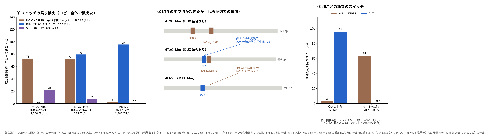
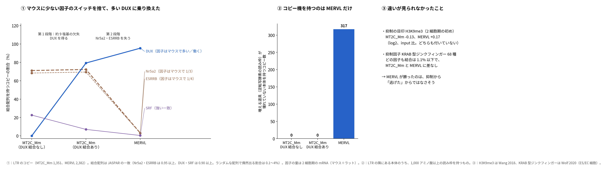
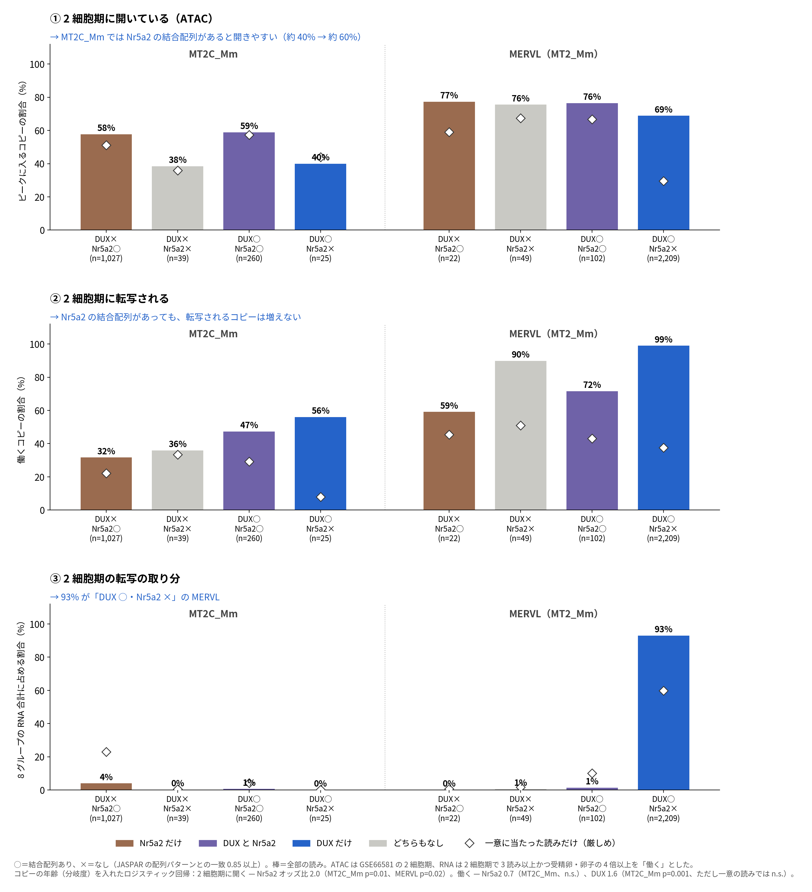
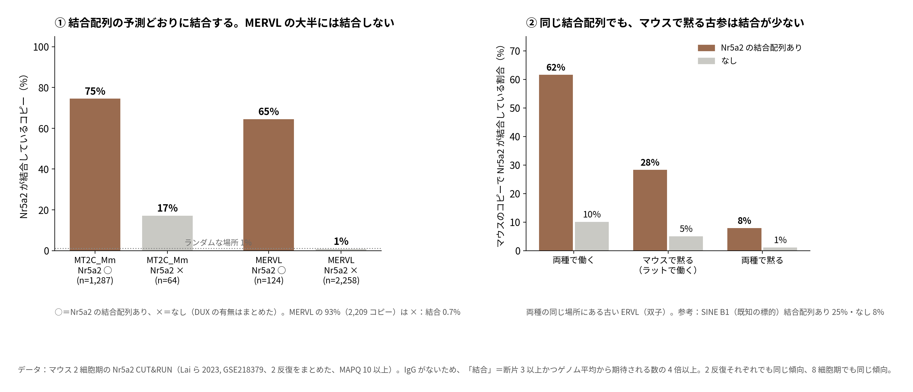
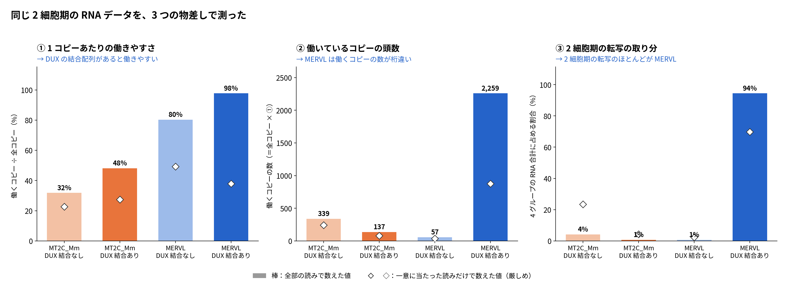

MT2C_Mm は、マウスに少ない因子のスイッチを捨て、DUX に乗り換えて MERVL になった
MT2C_Mm から MERVL に変わるときに何が起きたかを、LTR の結合配列（転写のスイッチ）、本体の遺伝子、抑制の目印で比べました。さらに、DUX と Nr5a2 の結合配列の組み合わせで、2 細胞期の開き方と転写を見ました。
MT2C_Mm の家系は、マウスの胚に少ない因子のスイッチを捨て、マウスで働く DUX のスイッチに乗り換えた。さらに、自分を増やす道具を持っていたのは MERVL だけだった。
- 第 1 段階：約 9 塩基の欠失で DUX の結合配列が生まれた（0% → 79%。MERVL では 95%）。
- 第 2 段階：MERVL になるとき、古参と共通の Nr5a2・ESRRB の結合配列を失った（73% → 3%。3% はランダムな配列で偶然出る割合と同じ）。
- 増える力：壊れていない本体（逆転写酵素の遺伝子）を持つコピーは MERVL が 317、MT2C_Mm は 0。
- 実測：Nr5a2 は MT2C_Mm（結合配列あり）の 75% に結合し、MERVL の大半には 1% しか結合しない（図 R13）。
- 種ごとの一致：マウスの新参（MERVL）は DUX 型、ラットの新参（MT2_Rat）は Nr5a2 型（64%、DUX は 0.2%）。それぞれの胚に多い因子と一致する。
結合配列
2 段階の乗り換え


どう解析したか
- MT2C_Mm を DUX の結合配列の有無で 2 つに分け（1,066 と 285 コピー）、MERVL の LTR（2,382 コピー）と比べた。
- 結合配列は JASPAR 2024 の配列パターンとの一致（向きをそろえた LTR 全体で探した）。Nr5a2・ESRRB は 0.95 以上、DUX は 0.90 以上。ランダムな 490 塩基の配列 5,000 個で偶然出る割合は、Nr5a2・ESRRB 約 4%、DUX 1.6%。0.85 以上では、Nr5a2・ESRRB が偶然でも約 33% に出てしまい、特異性が足りない。
- ② は各グループの代表配列（MAFFT で並べた 150 コピーずつのコンセンサス）での位置。約 9 塩基の欠失は既報（Hermant ら 2025, Genes Dev）と一致。


どう解析したか
- ① 因子の量は 2 細胞期の mRNA（マウス ÷ ラット）。
- ② LTR の隣にある本体のうち、1,000 アミノ酸以上の読み枠（逆転写酵素を含む）を持つものを数えた。
- ③ H3K9me3 は Wang ら 2018（2 細胞期の初め）、KRAB 型ジンクフィンガーは Wolf ら 2020（ES/EC 細胞、68 種）。
組み合わせ
DUX と Nr5a2 の結合配列で、開き方と転写を比べる



どう解析したか
- MT2C_Mm と MERVL を、DUX と Nr5a2 の結合配列のあり・なしで 2×2 に分けた。
- ATAC は GSE66581 の 2 細胞期のピークに入るかどうか。RNA は 2 細胞期に 3 読み以上かつ受精卵・卵子の 4 倍以上を「働く」とした。
- コピーの年齢（分岐度）を入れたロジスティック回帰で、DUX と Nr5a2 それぞれの効果を出した。
| グループ | コピー | 2 細胞期に開く | 転写される | 1 コピーあたりの RNA（全部／一意） | 転写の取り分 |
|---|---|---|---|---|---|
| MT2C_Mm DUX× Nr5a2○ | 1,027 | 58% | 32% | 0.26 ／ 0.15 | 4.0% |
| MT2C_Mm DUX× Nr5a2× | 39 | 38% | 36% | 0.27 ／ 0.09 | 0.2% |
| MT2C_Mm DUX○ Nr5a2○ | 260 | 59% | 47% | 0.17 ／ 0.11 | 0.7% |
| MT2C_Mm DUX○ Nr5a2× | 25 | 40% | 56% | 0.22 ／ 0.05 | 0.1% |
| MERVL DUX× Nr5a2○ | 22 | 77% | 59% | 0.29 ／ 0.22 | 0.1% |
| MERVL DUX× Nr5a2× | 49 | 76% | 90% | 0.81 ／ 0.24 | 0.6% |
| MERVL DUX○ Nr5a2○ | 102 | 76% | 72% | 0.96 ／ 0.68 | 1.4% |
| MERVL DUX○ Nr5a2× | 2,209 | 69% | 99% | 2.86 ／ 0.19 | 93% |
- 開き方：MT2C_Mm では、Nr5a2 の結合配列があると 2 細胞期に開きやすい（年齢をそろえてオッズ比 2.0、p = 0.01）。DUX の結合配列では変わらない。
- 転写：MT2C_Mm では、Nr5a2 の結合配列があっても転写されやすくならない（オッズ比 0.7、有意差なし）。1 コピーあたりの RNA も同じ（0.26 と 0.27）。開くところまではいくが、転写までは届いていない。
- DUX：MT2C_Mm で DUX の結合配列があると転写されやすい（オッズ比 1.6、p = 0.001）。一意に当たった読みだけだと差が消えるが、多重マップを EM 法で配り直すと 30% → 42% で残る。
- 取り分：93% は「DUX あり・Nr5a2 なし」の MERVL。これはコピーが多い（全体の 59%）ことと、1 コピーがよく働くことの両方による。
MERVL の中では、全部の読みだと「DUX あり・Nr5a2 なし」の 1 コピーあたりの RNA が最も多いが、一意に当たった読みだけだと「DUX あり・Nr5a2 あり」が最も多くなる。ほぼ同じ配列のコピーの読みを 1 本ずつ分けられないためで、MERVL の中で Nr5a2 がどう効くかはこのデータでは決められない。
実測
Nr5a2 は実際に MT2C_Mm に結合し、MERVL には結合しない



どう解析したか
- マウス 2 細胞期と 8 細胞期の Nr5a2 CUT&RUN（Lai ら 2023, GSE218379、各 2 反復）を mm39 にマッピングした（H3K27me3 と同じ手順）。
- IgG の対照がないので、ゲノム平均から期待される断片数の 4 倍以上かつ 3 断片以上を「結合」とした。ランダムな場所は 1%、既知の標的 SINE B1 は結合配列ありで 25%。
- 2 反復それぞれでも、8 細胞期でも同じ傾向（MERVL の結合配列なし 0.7〜1.1%、双子の古参 62% 対 29%）。
- 開いているだけでは説明できない：MERVL は 2 細胞期に開いていて（69%）、よく転写されているのに、Nr5a2 はほとんど結合していない。
- マウスで黙る古参：結合配列を持っていても結合が半分以下。Nr5a2 が少ないので結合しきれていない、という見方と合う（ただし、転写していないので結合しにくい、という逆向きの可能性は残る）。
3 つの物差し
MT2C_Mm と MERVL の転写の違い


どう解析したか
- 2 細胞期の RNA-seq（GSE66582）の読みを、全部の読みと一意に当たった読み（MAPQ 10 以上）の 2 通りで数えた。
- 「働く」の定義は図 R12 と同じ。
根拠に使わないもの
（転写の数字は、多重マップを EM 法で配り直しても、全部の読みとほぼ同じだった：MERVL が働く割合 87%、取り分 94.5%、1 コピーあたり MT2C_Mm の約 10 倍。）2 細胞期の初めの ATAC で「MERVL は開いていて MT2C_Mm は閉じている」（26% と 2〜3%）という差は、一意に当たった読みだけで数えると消えました。若い MERVL への読みの割り当てがあいまいなためです。この差（図 R8・R8b）は根拠に使っていません。